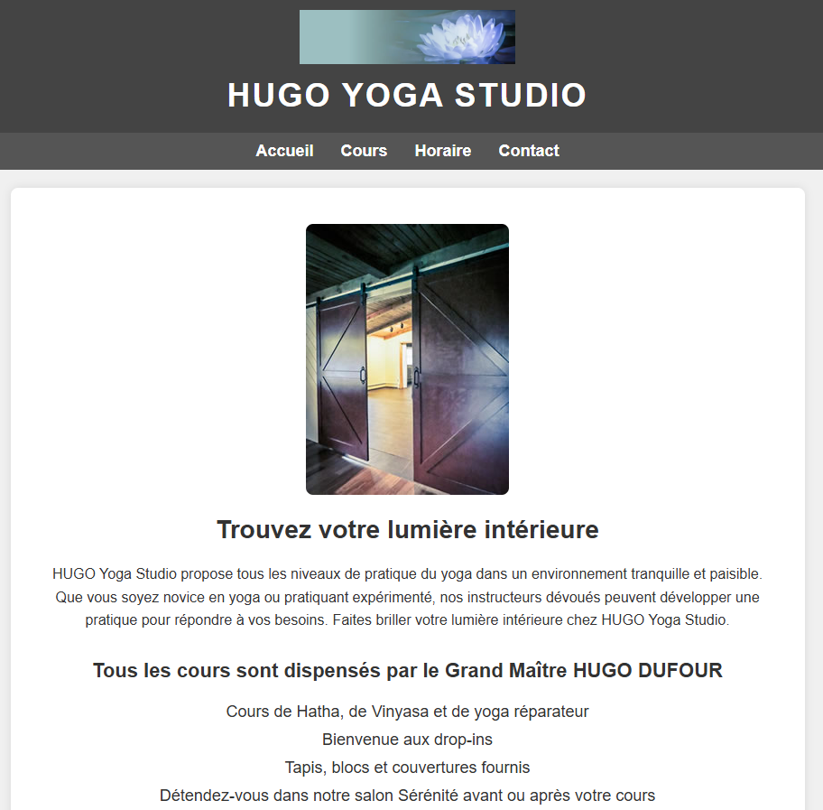

1
Aperçu du site
Site vitrine pour un studio de yoga fictif — Hugo Yoga Studio. Le site présente les cours, les horaires et les informations de contact du studio, dans une charte graphique calme et épurée.

Page d'accueil du site Hugo Yoga Studio — structure HTML statique avec navigation, image hero et contenu centré.